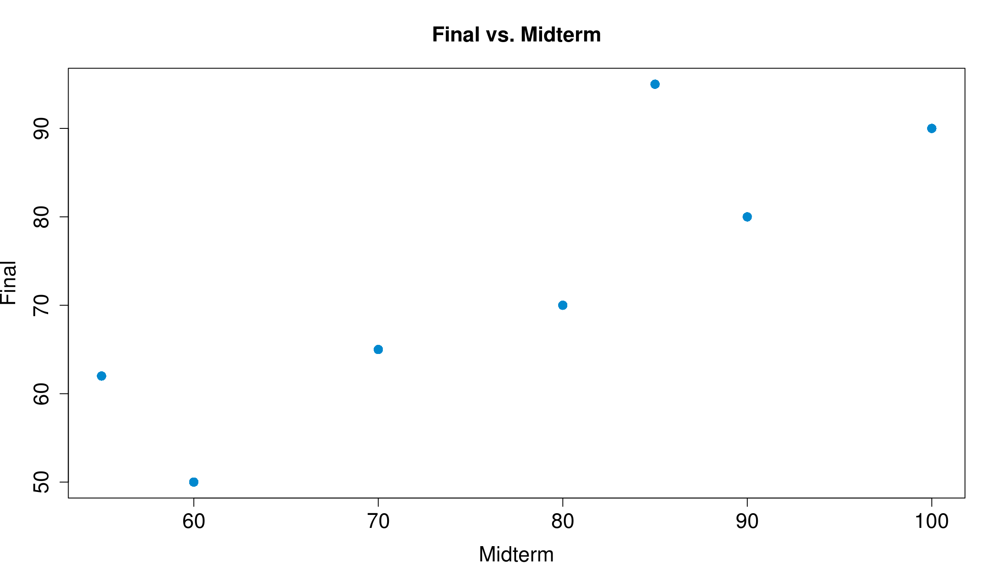
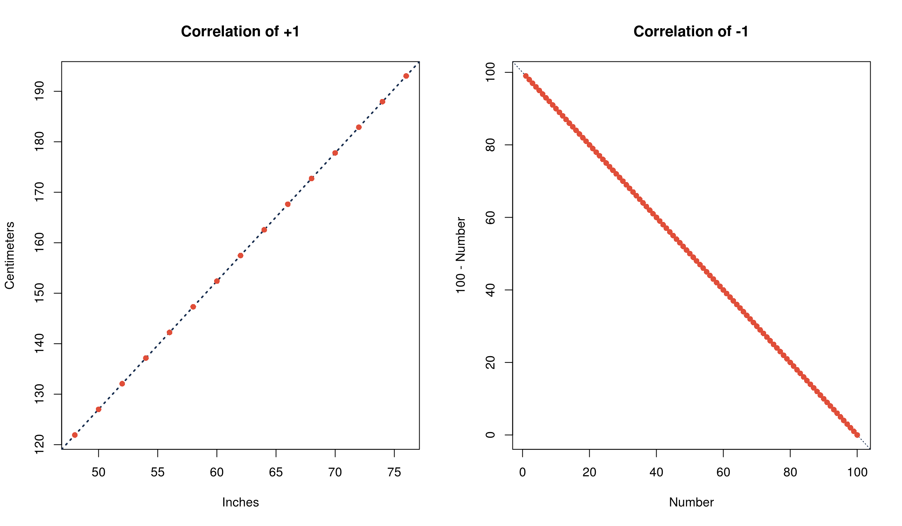
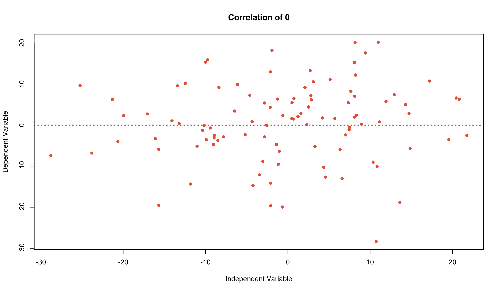
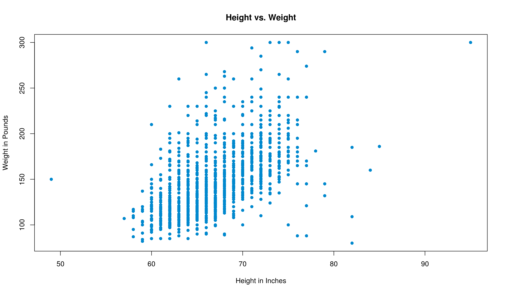
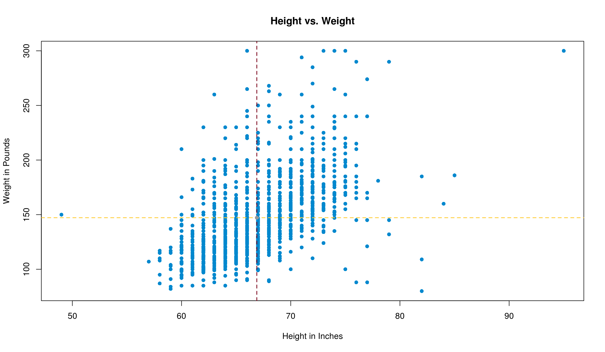
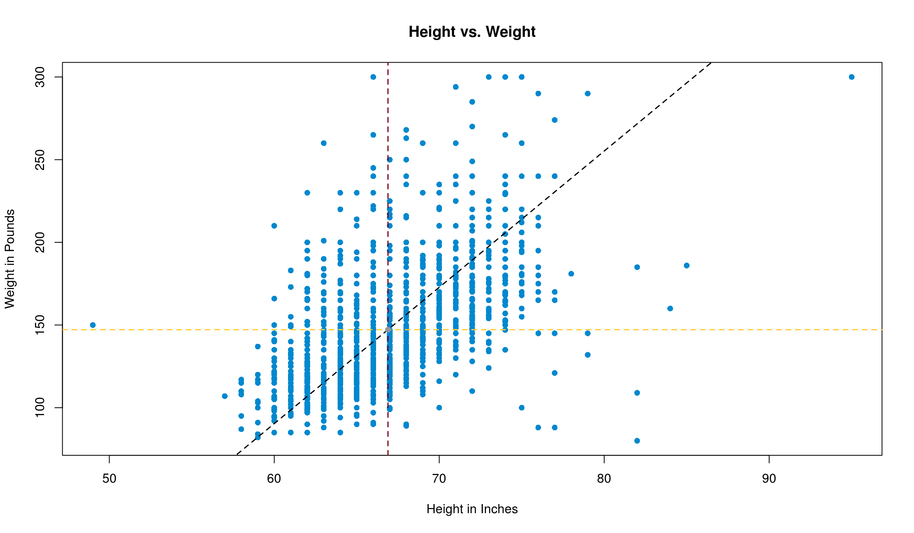
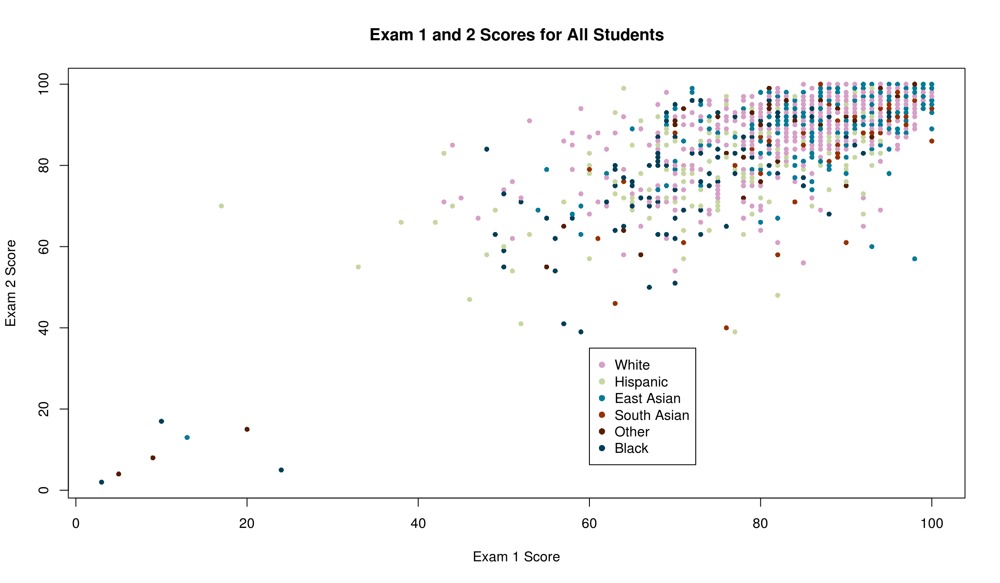
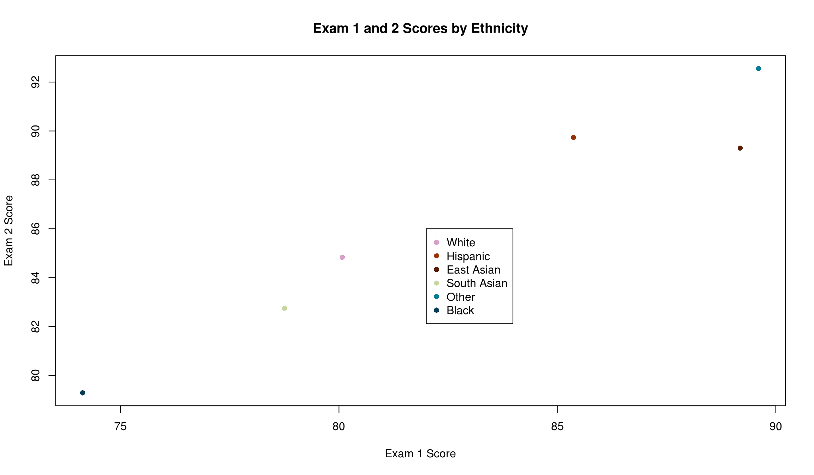

Chapter 12 Scatter Plots and Correlation
12.1 Scatter Plots
Everything we’ve done to this point has examined one variable of a data set, or things that could be represented by a single vector. While this helps us to understand that one particular variable, it’s much more interesting to us to examine how variables relate to one another. One way to visualize how they relate is through a scatter plot. A scatter plot puts one variable – an independent variable, or predictor, on the \(x\)-axis, and a second variable – the response, or dependent variable, on the \(y\)-axis. Usually, we’re trying to show how the independent variable explains the dependent variable.
Say, for example, we’re trying to find a relationship between a student’s midterm exam score and their final exam score. Let’s have a small class of seven students, with midterm and final scores according to the following table.
| Midterm | Final | |
|---|---|---|
| Student 1 | 55 | 62 |
| Student 2 | 60 | 50 |
| Student 3 | 70 | 65 |
| Student 4 | 80 | 70 |
| Student 5 | 85 | 95 |
| Student 6 | 90 | 80 |
| Student 7 | 100 | 90 |
It’s kind of hard to tell the general trend of the data from just looking at the table, so let’s plot the points. We’ll make the \(x\)-axis the midterm scores and the \(y\)-axis as the final scores. Note: we have the midterm and final scores stored in a data frame called test_scores.
Pro tip: If you’re ever not sure which variable goes where, think about which variable you’d try in predict. In this example, we’re trying to predict a final score from a midterm score, so the final should go on the \(y\)-axis.
To make the scatter plot, we’ll use the plot function (see ?plot for more information) and make use of the forumla syntax we discussed before. Now, however, we can write it as Dependent variable ~ independent variable.
plot(Final ~ Midterm,
data = test_scores,
pch = 16, # Makes points into closed dots
col = '#0088ce',
xlab = 'Midterm',
ylab = 'Final',
main = 'Final vs. Midterm',
cex.axis = 1.5, # Controls font size of axis numbers
cex.main = 1.5, # Controls font size of title labels
cex.lab = 1.5, # Controls font size of axis label labels
cex = 1.5 # Controls size of points
)
Now it’s much easier to see! Typically, the better a student did on the midterm (further to the right on the \(x\)), the better they did on the final (higher up on the \(y\)-axis). We can conclude that an increase in midterm scores is then associated with an increased final score. This is called a positive association. If instead increasing \(x\) meant decreasing \(y\), we’d call this a negative association.
12.2 Correlation
This is great, but it’s kind of general to just talk about associations. How do we tell if an association is strong or not? This is where the idea of correlation comes in. Correlation measures how closely the points follow a line, and they can be summarized by the correlation coefficient, \(r\). It does not measure points that are clustered around a curve. A good rule of thumb is that if the data is roughly football shaped, you can use \(r\).
If the points fall perfectly on a line and are negatively associated, \(r\) = -1. If the points fall perfectly on a line and are positively associated, \(r\) = +1. If there’s no association between the independent and dependent variables, the correlation is 0.
In other words, a correlation of $r = $1 means that you can know exactly what \(y\) is for any given \(x\) value. Examples are converting units (i.e. temperature from Fahrenheit to Celsius or vice versa) or anything that’s described by a line (i.e. the \(x\) and \(y\) values from the equation \(y = 6x + 9\)). Things that aren’t related, such as weight of college freshmen and ACT scores or class attendance and number of pets you own, have a correlation coefficient of \(r\) = 0.

12.3 Calculating \(r\) and cor()
To calculate the correlation coefficient, just follow a simple 3-step process.
Convert both \(x\) and \(y\) to Z-scores
Multiply the Z-scores of \(x\) and \(y\) together
Take the average of the products you just found in step 2
Like calculating a standard deviation by hand, it’s easy to see (and do) the calculation of a \(r\) in a table. Let’s make a small data set of 4 students’ scores on quiz 1 and quiz 2.
| Quiz 1 | Quiz 2 | Z\(_\text{Quiz 1}\) | Z\(_\text{Quiz 2}\) | Z\(_\text{Quiz 1} \cdot\) Z\(_\text{Quiz 2}\) | |
|---|---|---|---|---|---|
| Student 1 | 10 | 10 | 1.2 | 1.3 | 1.5 |
| Student 2 | 9 | 7 | 0.8 | -0.6 | -0.5 |
| Student 3 | 5 | 9 | -0.8 | 0.6 | -0.5 |
| Student 4 | 4 | 6 | -1.2 | -1.3 | 1.5 |
Averaging the last column, Z\(_\text{Quiz 1} \cdot\) Z\(_\text{Quiz 2}\), we get that the correlation coefficient is 0.5.
Of course, R can calculate this for us. We can get \(r\) through the cor() function, which just needs the two vectors for which you’d like to calculate the correlation.
quiz1 = c(10, 9, 5, 4)
quiz2 = c(10, 7, 9, 6)
cor(quiz1, quiz2)[1] 0.512.4 Statistics of the “Cloud” Scatter Plot
When our data is roughly football-shaped (like we see below), there are five statistics, called the summary statistics, that we’ll want to pay attention to.
The Avg\(_x\) is the average (mean) of the variable on the \(x\)-axis
The Avg\(_y\) is the average of the variable on the \(y\)-axis
- The point (Avg\(_x\), Avg\(_y\)) is referred to as the point of averages
The SD\(_x\) is the standard deviation of the variable on the \(x\)-axis
The SD\(_y\) is the standard deviation of the variable on the \(y\)-axis
The correlation coefficient, \(r\), which describes how closely \(x\) and \(y\) follow a line
These statistics are usually given to you in class, but you’ll have to calculate them yourself or have R calculate them on any data set in practice! We’ll use the data from Survey 1 (loaded as survey1) as we did before, and focus on the height and weight variables, since these are probably correlated. We’ll make use of the stdv() function we wrote before.
(means = c(mean(survey1$height), mean(survey1$weight)))[1] 66.89189 147.19165(stdvs = c(stdv(survey1$height), stdv(survey1$weight)))[1] 4.148278 34.183133(cor = cor(survey1$height, survey1$weight))[1] 0.5676085Pro tip: enclosing code in () while making an assignment both assigns the variable and displays the calculation
Reformatting this information into a table, we’d summarize it as
height and weight from survey1
| Average | Standard Deviation | ||
|---|---|---|---|
height
|
66.9 | 4.1 | \(r\) = 0.6 |
weight
|
147.2 | 34.2 |
One last step before we start using this information: let’s plot what this looks like so we can see what the data looks like. Let’s let our \(x\)-axis be height and our \(y\)-axis be weight.
plot(
weight ~ height,
data = survey1,
pch = 16,
xlab = 'Height in Inches',
ylab = 'Weight in Pounds',
main = 'Height vs. Weight',
col = '#0088ce'
)
The data is shaped roughly like a football, so we can continue!
First, let’s add in the point of averages that we talked about before. We’ll make that point grey, and show the intersecting lines on the plot with <span style = ’color: #ffcc33>gold and maroon.

12.5 The SD Line
The SD line is the line that goes through the tips of the football, passing through the point of averages. Its slope is defined by
\[ \text{Slope of SD Line} = \begin{cases} \frac{\text{SD}_\text{y}}{\text{SD}_\text{x}} & r > 0 \\ -\frac{\text{SD}_\text{y}}{\text{SD}_\text{x}} & r < 0 \end{cases} \]
In our example, the slope of the SD line is thus \(\frac{34.2}{4.1} =\) 8.3. We can add this line to our plot with abline() function. abline() looks for arguments a (the intercept of the line) and b (the slope of the line). We’ve got the slope, but we just need to find the intercept.
Some quick algebra gives us the following, assuming we know the slope, average in \(x\), and average in \(y\).
y = slope \(\cdot\) x + intercept
Plugging in the fact that the SD line has to go through the point of averages (i.e. the point (Avg\(_\text{x}\), Avg\(_\text{y}\)) has to satisfy the equation we’re looking for), we can plug in (Avg\(_\text{x}\), Avg\(_\text{y}\)) for x and y respectively.
Avg\(_\text{y}\) = slope \(\cdot\) Avg\(_\text{x}\) + intercept
Avg\(_\text{y}\) - slope \(\cdot\) Avg\(_\text{x}\) = intercept
In our case, this gives that 147.2 - (8.3 \(\cdot\) 140) = -404.9. So adding the following line to our plot
abline(a = -404.9, b = 8.2)will add the SD line to our plot.

12.6 Subsetting and Ecological Correlations
Subsetting
Sometimes, we may think that it’s useful to summarize data into groups, then talk about the statistics of that group. For example, we may want to compare how different ethnicities in class scored on their midterms. In this case, we don’t necessarily care about how well each student did, but we’re interested in how groups of them did. This is easy to see with this data from Bonus Survey 4. We’ll import it as survey4, and you can find the description of the dataset here.
survey4 = read.csv('data/Combined Fall 2017 Survey 4.csv')The ethnicity variable is the one that we’d like to group our data by. ethnicity in this data set can be any one of the following:
Black
East Asian
Hispanic
South Asian
White
Other
We have a few options of how to group, or subset, the data, some of which are more memory-intensive than others. Method one is to use the subset() function. If, for example, we wanted to only look at East Asian students’ performance on exam 1, we could write something like
east_asian = subset(survey4, survey4$ethnicity == 'East Asian')
mean(east_asian$Exam1)[1] 89.60363Note: We used a double equals ( == ) to evaluate the condition, and we passed the condition we were looking for as a string.
This takes all of the data from survey4, finds which rows have ethnicity of 'East Asian' (again, matching case), and puts them into their own data frame called east_asian. One great perk of this method is that it’s very easy to keep track of things, since you can then call on parts of the new, subsetted data frame just like you would have on the bigger data frame. Even the names of the features stay the same. However, this method can get fairly memory-intensive since it takes memory to store the data frame we created. The more subsets you’d like to have, the more memory you start to use up, and the slower your code may run.
Method 2 is to take advantage of vectorization again. We can subset the data here by using [], $, and even do calculations, all in one step. Let’s try to get the same result as above, but this time we use vectorization.
mean(survey4$Exam1[survey4$ethnicity == 'East Asian'])[1] 89.60363If this is confusing, start from the inside and work your way out. First, we found the rows where ethnicity was 'East Asian'. Then, from these row numbers (indexes), we took the exam1 numbers, and lastly took the mean of them. As you can see, they produce the same result, but this one uses less memory and less lines of code. Pretty cool!
The last point we should make about subsetting is that using [] is equivalent to subset(). If we wanted to make the same subset using [], we could do something like this. Just so we don’t overwrite east_asian, we’ll call this one e_a, and use the identical() function to check if they’re the same.
east_asian = subset(survey4, survey4$ethnicity == 'East Asian')
e_a = survey4[survey4$ethnicity == 'East Asian', ]
identical(east_asian, e_a)[1] TRUENote: in creating e_a , we had to include the , so that we could get all rows. If you wanted only certain columns, you could put something after the , to get only those columns.
Ecological Correrlations
Now that we know how to restrict data by conditions, we can go back to our original question of representing a bunch of data by the groups they belong to. If we wanted to visualize the original data by ethnicity, one option we have is to color the points accordingly. Remember, we’re interested in the relationship between scores on exams 1 and 2. If we treat each student as a unique data point, the data has correlation 0.7
plot(Exam2 ~ Exam1, data = survey4,
xlab = 'Exam 1 Score',
ylab = 'Exam 2 Score',
main = 'Exam 1 and 2 Scores for All Students',
col = survey4$ethnicity,
pch = 16,
cex = .8
)
legend(x = 60, y = 35,
legend = unique(survey4$ethnicity),
col = unique(survey4$ethnicity),
pch = 16
)
Another option we have, however, is to condense the plot to be the averages of each ethnicity for each exam.
exam_1_means = c(mean(survey4$Exam1[survey4$ethnicity == 'Black']),
mean(survey4$Exam1[survey4$ethnicity == 'East Asian']),
mean(survey4$Exam1[survey4$ethnicity == 'Hispanic']),
mean(survey4$Exam1[survey4$ethnicity == 'South Asian']),
mean(survey4$Exam1[survey4$ethnicity == 'White']),
mean(survey4$Exam1[survey4$ethnicity == 'Other']))
exam_2_means = c(mean(survey4$Exam2[survey4$ethnicity == 'Black']),
mean(survey4$Exam2[survey4$ethnicity == 'East Asian']),
mean(survey4$Exam2[survey4$ethnicity == 'Hispanic']),
mean(survey4$Exam2[survey4$ethnicity == 'South Asian']),
mean(survey4$Exam2[survey4$ethnicity == 'White']),
mean(survey4$Exam2[survey4$ethnicity == 'Other']))
These have a higher correlation (\(r\) = 1) and visually look like they follow a line much closer. This makes sense: it takes two points to determine a line. The more points we have, the less they’ll fall on a line unless we know that they were generated by some rule or equation that directly ties them together. In subsetting our data, we went from 1518 data points to only 6. It’s much easier for 6 data points to fall on a line than it is for 1518. This is the effect of an ecological correlation.
Higher correlation may seem better, but that’s not always true. By reducing each student to their ethnicity, we have lost a lot of data points from our data set (1512 to be exact). This makes it easy to talk about ethnicities, but we may lose the understanding of the performance of an individual in the class.
12.7 Summary of Correlation
Some facts about \(r\) to keep in mind:
Correlation is not causation
\(r\) is unitless, since when switching to Z-scores, the data loses its units
\(r\) does not change by doing any of the following:
- Adding/subtracting the same number from all values of \(x\) and/or \(y\)
- Multiplying all values of \(x\) and/or \(y\) by the same number. Note: multiplying either \(x\) or \(y\) (but not both) by a negative number changes the sign of \(r\)
- Changing units of the original data (see fact 2)
- Switching all of the \(x\) values with all of the \(y\) values
If you don’t believe any of these facts, go ahead and prove them to yourself, or come in to office hours and ask a TA to help you!